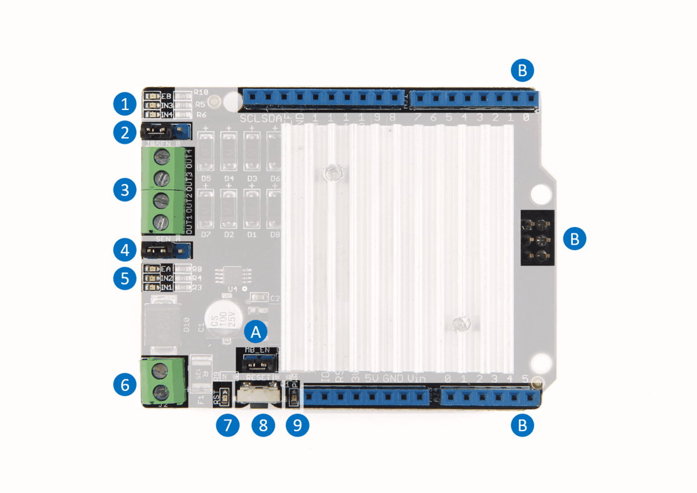
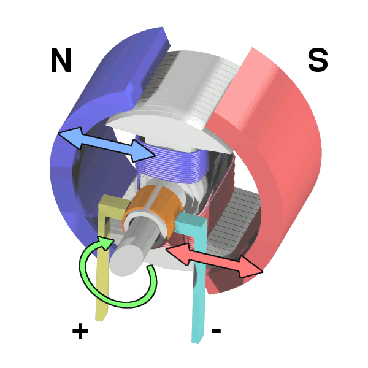

The Motor Shield is a driver module for motors that allows you to use Arduino to control the working speed and direction of the motor. Based on the Dual Full-Bridge Drive Chip L298, it is able to drive two DC motors or a step motor. The Motor Shield can either be powered directly by Arduino or by an external 6V~15V power supply via the terminal input. This module can be used for the development of micro robots and intelligent vehicles, etc

| Spec | Value |
|---|---|
| Operating Voltage | 5V |
| External Power | 6-15V |
| Output Current | 2.0A Max @ Each Channel |
| PWM Range | 0-100% |
| Output | 2 Channels, 4 Ports |

1. Channel 1 indicator, include 3 leds
2. Channel 1 Sense - Please connect the left 2 pins together for normal usage.
3. OUTPUT - There're 2 channels, each channel has 2 output
4. Channel 0 Sense
5. Channel 0 indicator, include 3 leds
6. External Power Input, range 6-15V
7. Reset indicator - turn red when Reset button is pressed
8. Reset button - pressed to reset the shield and Arduino
9. Power indicator - turn green when power in, either internal or external
A. Power switch
B. Standard Arduino shield pin out
| Arduino Pin | Function |
|---|---|
| D0 | Not Used |
| D1 | Not Used |
| D2 | Not Used |
| D3 | Not Used |
| D4 | Not Used |
| D5 | Not Used |
| D6 | Not Used |
| D7 | Not Used |
| D8 | OUT1 |
| D9 | Enable of Channel0 |
| D10 | Enable of Chennel1 |
| D11 | OUT2 |
| D12 | OUT3 |
| D13 | OUT4 |
Note that D8~D13 was used by Motor Shield. Please don't use those pins to avoid conflict.
| Arduino Pin | Function |
|---|---|
| A0 | Not Used |
| A1 | Not Used |
| A2 | Not Used |
| A3 | Not Used |
| A4 | Not Used |
| A5 | Not Used |
Note that Not Used means you can use those pins freely.
Here we will show you how to drive a dc motor and a stepper with this shield.
We need a Seeeduino V4 as the controller, Seeeduino V4 is an Arduino compatible board, and you can use an Arduino as well.
And you need a dc motor or a stepper for testing.
Click the below button to download the library. If the library you had download include "-master", please remove it.
You can drive 2 DC motor with this shield. Here I will show you how to drive a DC motor.

You need to do some preparing first:
Then open motor_dc example in the library. Upload the code to Seeeduino V4.2.
// Demo function:The application method to drive the DC motor. // Author:Loovee (luweicong@seeed.cc) // 2016-3-11 #include "MotorDriver.h" MotorDriver motor; void setup() { // initialize motor.begin(); } void loop() { motor.speed(0, 100); // set motor0 to speed 100 delay(1000); motor.brake(0); // brake delay(1000); motor.speed(0, -100); // set motor0 to speed -100 delay(1000); motor.stop(0); // stop delay(1000); } // END FILE
Then you will find your motor move (1s), stop (1s), move back (1s), stop (1s), and loop.
If there's nothing happen, please make sure:
You can drive a 4-wire stepper with this shield. Here I will show you how to drive a stepper.

You need to do some preparing first:
Find the pin definitions of you stepper, and connect it to the OUTPUT of the shield. As below:
| Stepper | Motor Shield |
|---|---|
| A+ | OUT1 |
| A- | OUT2 |
| B+ | OUT3 |
| B- | OUT4 |
Then open stepper_test example in the library, upload it to Seeeduino V4, then you will find your stepper move.
/* * Stepper test for Seeed Motor Shield V2 * loovee @ 15 Mar, 2016 */ #include <Stepper.h> // change this to the number of steps on your motor #define STEPS 200 // create an instance of the stepper class, specifying // the number of steps of the motor and the pins it's // attached to Stepper stepper(STEPS, 8, 11, 12, 13); // the previous reading from the analog input int previous = 0; void step(int steps) { digitalWrite(9, HIGH); digitalWrite(10, HIGH); stepper.step(steps); digitalWrite(9, LOW); digitalWrite(10, LOW); } void setup() { // set the speed of the motor to 30 RPMs pinMode(9, OUTPUT); pinMode(10, OUTPUT); digitalWrite(9, LOW); digitalWrite(10, LOW); stepper.setSpeed(30); } void loop() { step(1000); step(-1000); } // END FILE
If there's nothing happen, please double check if you had connected the wire right.
Description
Initialize the IOs, should be called at the very beginning of the code(maybe Setup()).
void begin();
Description
Set speed, control by PWM.
void move(int motor_id, int speed);
void stop(unsigned char motor_id);
void brake(unsigned char motor_id);
Note that we use the library provided by Arduino IDE to drive a stepper.
There's something need to be modified, please refer the examples.
Copyright (c) 2008-2016 Seeed Development Limited (www.seeedstudio.com / www.seeed.cc)